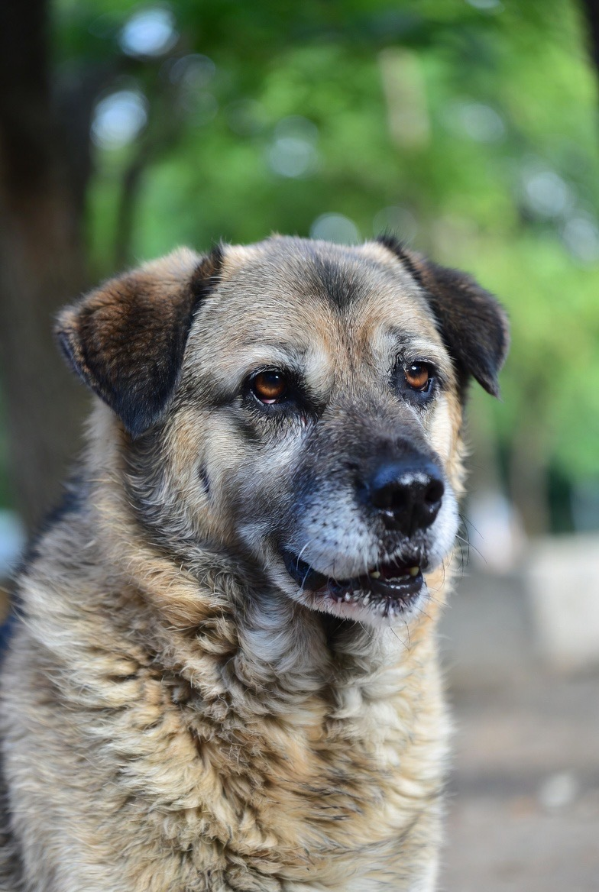
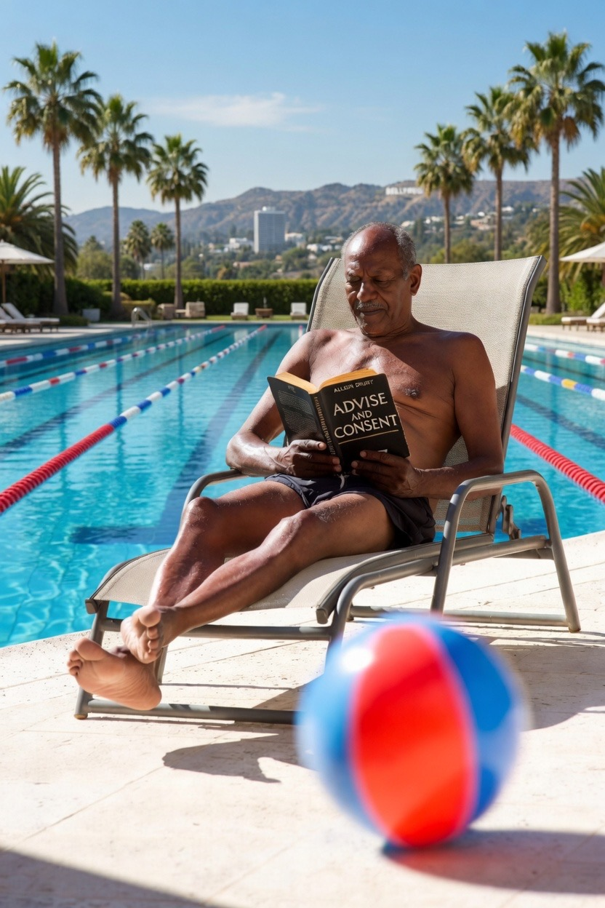

Senior

Blaze was short for Blazier. The story of his name stewed in Bayou swamps, meadows and waters mired in lost, buried and imagined treasures beneath a house between swaying trees deep inland from Louisiana’s gulf riptides and, later, lower parts of the Lone Star state. Blaze’s family lore scandalizes as much as any family in that raucous region. This is a tale of his divergence.
Blaze was a solitary boy with plenty of company and constant companions on a family farm near the Texas-Louisiana border. Animals were his closest friends, as he didn’t quite take humans as they are, for better and for worse, though they took him. Sometimes they took the farm boy for the fool. Time and again, he was cheated — cheated on, cheated upon — until he grew into a gentleman and got wise, settling into an ornate Gothic house in Hollywood’s hills near where he worked in pictures. One night, he woke up from a pleasant dream, recalling roosters, dogs, pigs, cats and an old race horse named DuSkaddle. Blaze drove down the hill the next day to an animal shelter and adopted himself a dog. The pooch had gray whiskers and warm, chocolate brown in his eyes. After all the fussing over his own name, Blaze gave the dog the name Senior.
They did everything together, going on walks, getaways and hikes in the hills. Senior and Blaze, who was getting up there at 63, paired even along the beach though Blaze didn’t so much as wade in the water. He hadn’t learned how to swim. This was a sore subject. He told himself he grew up on a farm and didn’t get to see the gulf until he was 22. He went for years there, with Senior witnessing various projects, partners and productions as Blaze made movies in company with men who often wanted him, usually with ulterior motives for an easy life in a gussied up old Hollywood mansion.
Eventually, Blaze took Senior, packed his things and moved into an apartment in midtown. It was closer to the farmers’ market, which granted Blaze the comfort of nostalgia for his boyhood on the Texas countryside. The complex had a fitness center and amenities. These included a sauna, hot tub and swimming pool — an Olympic size pool — besides a steam room. Blaze rarely used them. Senior was even less impressed. But along the dog went on occasions when Blaze sunbathed by the pool or stepped into the hot tub, after wrapping Senior’s leash around a pole. The old dog rested his head and watched his master like a hawk.
One day, as Blaze read a book on the chaise lounge by the swimming pool, a family of four arrived, rustling up a fuss with flotation devices, getting Blaze wet, which he tolerated. So did Senior, who cast an eye upon an exuberant boy in the pool who let out a laugh which was halfway between a giggle and a squeal. The sound reminded Blaze — his eyes fixed on a page trying to concentrate on the Allen Drury novel he’d started reading — of pigs on the farm. When a beach ball rolled up, Blaze glanced at the boy who looked hopeful that tall, fit, darker-skinned Blaze would engage. Picking the ball up and tossing it to the boy, whose parents were frolicking on the other end of the pool and whose older sister was drying and sunning herself after a dip, Blaze tossed the ball to the kid in the pool.
The boy mistook the gesture as an act of playfulness, tossing the ball back to Blaze, who gamely passed it back, thinking that would be that. This, too, was a mistake. Senior kept his head between his paws while watching the back-and-forth. The boy giggled as he tossed the ball back to Blaze. This time, Blaze decided to tell the boy he wasn’t interested in playing a game. He picked the ball up, walked to the poolside and began to speak: “Son,” he said in his deep Texan drawl, “I’m reading if you don’t mind, alright?” The boy nodded with a pout as Blaze turned to walk back to the beach towel and paperback novel. As he did, his heel met a puddle, causing him to slip and fall backward, splashing and plunging into the pool. Senior lifted his head, his eyes growing wide, his tongue panting with anxiety. The dog knew Blaze couldn’t swim.
Down went Blaze, kicking and flailing and in went Senior, springing forth as the leash uncoiled with a whip and leaping into the pool with a deep, growling bark, which could be heard a block away — all four paws fully extended in flight like Super Dog bounding from building to building. The old dog hit the water as the back of Blaze’s head hit the bottom of the shallow end of the pool. Blood floated up like a thick, twisting red ribbon coming undone. The boy swam to the side in terror, stricken with silence as his father dove into the pool straight to the bottom, scooping Blaze into his arms as the mother pulled an alarm before tossing a life preserver. By the time the father brought Blaze to the surface, residents had gathered, gawking and chattering while paramedics were dispatched. One resident laid a towel and bandages. Senior barked, struggling to get out of the pool as the boy’s father carried Blaze to the table.
By the time he regained consciousness, a resident and off-duty nurse dressed his wound. Everyone else surrounded champion swimmer Dimitri Graynias, who had saved Blaze’s life. Blaze turned his bloodied head to watch the commotion, feeling pain throb in the warm sun as he felt the breath of his dog. Then, he felt Senior’s tongue licking his feet.
Vans parked in front of the luxury apartment building for a few days as reporters told the story over and over of the Olympic athlete saving the life of an older man who’d slipped and fell into a swimming pool. Throughout the spectacle, no one informed him that Senior dove in first. In the days that followed his discharge from the hospital, Blaze felt ashamed, invisible and powerless.
At home, Senior sat panting at his feet day after day, night after night. Callers came and went — repairmen when something needed fixing, studio executives with whom Blaze had worked on movies and shows, most as grist for Hollywood’s gossip mill, though a few and a friend here and there as a courteous visit of genuine concern — as Blaze became quiet, immobile and withdrawn. He’d sit for hours fixed on screens — large, small and medium — occasionally chuckling, mostly staring into space or shuffling into the pantry for snacks. Senior detected the motionless routine and, after a while, began to whimper like he had to piddle. He didn’t. But he knew Blaze loved him and would get moving to go for a walk if Blaze thought he did. So the dog acted as if he did.
Action mobilized the movie producer. Senior noticed this, even as his own aging body ached, and his owner invariably started to cheer up a few strides into each walk. Whether they walked to the apartment complex courtyard, around the block or to a nearby park, Senior picked up the pace, Blaze followed suit and the movement and visibility made Blaze feel congenial and less dejected.
After a while, Senior could stop pretending he had to pee. “Wanna go for a walk?” Blaze would ask in a voice getting higher. Senior would open his mouth as if to smile and pant with his tongue hanging out and his large, brown eyes looking at his master with pure love and affection. The feel of his fur against the harness, the sound of the clasp, the clack of the wood-soled shoes Blaze slipped into and the jumble of keys before hearing the deadbolt lock on the door as they’d step out to go for a walk — all of it added up to a new routine and a happier Blaze.

By the third month, Blaze walking Senior to the park afforded social connection. Everyone flirted with him. Neighbors reunited, asking about his prognosis. He encountered studio bosses, publicists and writers, cameramen and other crew with whom he’d worked over the decades. Suddenly, Senior was hearing, “now, be a good boy while I’m away,” as Blaze left the apartment after dabbing cologne or pulling on a sweater or sport coat to go for a date, story conference, screening, table reading or to meet a friend.
Walks to the park became daily. Senior looked forward to days when they would simply walk around the complex or, even better, make a quick trip into the courtyard. The length of time they were out in the park wore him down, though Senior didn’t complain. He sensed Blaze enjoying attention, connection, saying good afternoon to strangers and neighbors alike, and being recognized by those who asked: “Do I know you…Have you been on the red carpet?” Wherever they went, Senior was happy to be with Blaze. They were usually together. People petted his coat or gave a pat on the head (Senior liked attention, too). He cherished being with Blaze.
The bond strengthened. The dog was as happy as happy can be, lapping up water with a rhythmic triplicate pattern that went on and on in a cycle Blaze knew so well that he’d laugh whenever Senior would get tired of standing with his head bent down and collapse on the kitchen floor to drink from the bowl between his paws. The only instances the dog showed any sign of distress is when he observed his master hesitating or suddenly pause or wobble during the walk.
Blaze knew this was caused by sleep deprivation. He knew he hadn’t maintained mental or physical fitness. He kept old habits — constantly watching television, attention on screens — and he didn’t read as often or as well as he used to. Except for the walks, which were his lone form of motion, Blaze didn’t move his body in a purposeful way, and he sat for hours with his head down, mostly looking at a screen. At night, he drank alcohol, and, with his calendar filled, he socialized more often, which was good for connection but taxing on his energy. Socializing tapered off. Blaze couldn’t keep up. He rarely kept the pledges he’d made.
Studio bosses liked what Blaze proposed in story conferences. But Blaze did not produce what he promised. Friends enjoyed his company, though good friends wanted to do more than sit and eat food and drink alcohol. Some invited Blaze for a hike, a weekend getaway at a cabin or a rental house on the beach. Men he dated often invited him over. He rarely accepted. Instead, Blaze did more socializing than realizing. Invitations stopped. At that point, so did Blaze. He stalled.
He occasionally went out. As unpaid bills and social and work requests piled up, pressure accumulated. Inactive Blaze stopped putting energy into walking and socializing. Only grudgingly did he walk Senior. One night, after a week of rainfall, Senior stood behind Blaze as usual as he inserted his key into the apartment door, wiping his shoes on the doormat. The old dog sensed something and sniffed around his ankles. Then, up the pant leg. Back down again. When the door opened, Senior followed close and kept sniffing. After drinking water, chowing down and watching Blaze nod off in front of another screen for a couple of hours, it was bedtime. As Blaze tumbled into bed and pulled up the sheets, Senior stayed seated in the bedroom doorway, amusing and puzzling Blaze. Senior panted — no smile — examining his owner.
Senior barked. One loud, gruff bark, which made Blaze laugh. Senior looked Blaze in the eye with intent — as if the dog had something important to say — and barked again in a single, louder, emphatic bark. This got Blaze’s attention. “What is it, boy?” Another bark, followed by another. “What’s wrong, old dog?” He asked, catching himself in the mirror as he did. Three barks, one after another, came from Senior, who lumbered to the bed, got on his back legs and started licking Blaze’s face.
The cancer diagnosis came a few weeks later. The doctor said it wasn’t terminal. Tests proved it had been caught early, though it had spread. Tests were done. Blaze went into treatment.
During the following year, Blaze came closer to family and friends and, as you might suppose, felt inclined to reach out in earnest to connect with those he loved and with people at large, too. He dated off and on and found the dates draining. At medical appointments, Blaze arrived in calm and departed deflated from navigating bland spaces where he endured radiation, scans, injections and a tedious cycle of bureaucracy — talking, listening, consenting, waiting and showing up to wait for hours, only to be delayed or postponed — all of which hinged on the lie that any of this was urgent, reasonable and necessary.
Through every humiliation, Blaze felt Senior’s steady gaze upon him every night. Sometimes, he cried, falling sideways onto the sheets, curling up in acceptance, despair and exhaustion. Other times, he laughed at the absurdity. Most of the time, he did both at the same time, blood, tears and fluid coming out of every orifice of his beleaguered body. All the while, Senior’s eyes looked upon his master with unblinking sympathy, strength and love.
On the rare occasions when a date showed up or returned home with Blaze, Senior lay in his bed, eyes closed as he slept — or pretended to sleep — or looked away to give Blaze privacy. One of the men he had over, Stan, whom Blaze had taken to calling Stanny, visited often. As Stanny and Blaze became a couple, Stan started helping by serving Senior’s meals while Blaze would rest.
Because Blaze had stabilized, he was able to walk Senior to the park for the first time in months one dewy Sunday morning. That’s when Senior stumbled a few times. The dog buckled and collapsed on the apartment doormat. Blaze bent down, picked him up and put the old dog into an automated car he hired to drive Senior to the emergency veterinary center a few blocks away.
Blaze sat in a corner of the exam room in a hard, steel chair, looking into his dog’s eyes as the vet felt, probed and examined Senior. He never took his eyes off his dog’s brown eyes, which had that look a dog has when consoling his owner in advance, signaling he’s ready to yield to the end.
The vet finished, spoke for several minutes about what was ailing Senior, whom he’d known through exams for years. Blaze listened, nodding, asking questions while looking at his dog. Blaze knew this was probably the end of his dog’s life. Stan called during the vet visit. “I’m coming over,” he said. “No, Stan,” Blaze said, “I’m OK.” Stan came anyway. He pushed the exam door open as Blaze waited for the vet to bring Senior back after more tests. Stan stood next to Blaze. When the veterinarian re-entered with Senior, Stan listened, stepping over and petting Senior without saying a word. Stanny cried, dabbing his tears so Blaze couldn’t see.
“How are you holding up?” Blaze asked Stan as they walked to Stan’s car with Senior. “I’m sad,” Stan answered. “I feel terrible. I can see your dog’s in pain.” He felt Blaze’s arm wrap around his waist. Stan kept walking while holding Senior’s leash and fishing for his car keys in a pocket. “You’re a good man,” he heard Blaze say. Blaze choked on the last word, which made Senior stop in his path. The dog slowly turned his head. “Thank you,” Stan heard himself gently say in reply. He said this as he slipped his free hand into Blaze’s.
Stan squeezed Blaze’s hand as he heard him sob, which started when Blaze’s eyes met Senior’s. This set Stan into a swift, flowing motion as he gripped Blaze by the shoulder and planted a soft, single kiss on his lips, then guided him to the passenger door, which he’d managed to open as he stepped forward while holding Senior’s leash. Blaze sat and sobbed in Stan’s car as his partner lifted Senior’s posterior, pushing the old dog up into the car’s backseat.
Conversation started when the driver door closed. “I support you, whatever you decide,” Stan said after turning the key and handing a box of facial tissue to Blaze, whose sobbing did not abate. “I apologize,” Blaze told Stan before blowing into a tissue. “Unaccepted,” Stan replied after a few moments, backing up before accelerating the car. “I want you to feel what you feel.”
At home, Blaze went about setting the table for dinner while Stan fed Senior a bowl of food Senior did not eat and heated a meal for himself and Blaze. After dinner, Stan went and read in a bedroom chaise lounge while Blaze held and brushed Senior on the living room sofa, softly crying — consumed by the question: what can I do? The vet had explained the choices.
A couple of days later, a midday knock came on the front door. Blaze noticed that Senior stayed on the floor and barely opened his eyes. As he did, Blaze glanced at the old dog and caught a pleading and peaceful look in Senior’s eyes, which could’ve sent Blaze on a crying spell if he didn’t have to answer the knock on the door. “Hi,” greeted the boy standing on his doormat in front of his father, Dimitri Graynias. “I’m sorry I caused you to slip and fall and I hope you’re feeling better.” The child spoke naturally, though he spoke with his father’s hand perched on his shoulder. Blaze replied: “It wasn’t your fault. You didn’t do anything wrong, son.” Blaze made eye contact with his poolside playmate and added: “It was an accident and it was mine.”
Dimitri Graynias, his father — the champion swimmer who rescued Blaze — stepped forward, gently brushing past his son, and asked: “May I have a word with you?”
Blaze replied, “yes, of course,” stepping back and opening the door as father and son entered his home. “Dad, can I go pet Senior?” The question shocked Blaze, who was about to ask how the kid knew his dog’s name when the dad answered “ask his owner” and Blaze nodded before the boy had a chance to ask. Then, he turned to his savior. “Can I offer you something to drink?” “Thanks, but no thanks,” Dimitri said as Blaze led him into the living room, motioning for him to take a seat on the sofa. “I came to tell and ask you something.”
Blaze sat back on a chair and listened. “I wish I’d come here sooner,” Dimitri started, shifting in his seat, lowering his voice and looking over his shoulder at his son, who was petting Senior on the dining room floor as the dog lay in a strip of afternoon sunlight. “It happened fast and I didn’t see what was going on and when my daughter told me what my son said —”
Blaze was getting lost. “You’re losing me…what are you talking about?”
“That day in the pool,” Dimitri finally said before confessing what he came to say: “I didn’t know your dog dove into the pool first.”
Blaze felt like someone dropped a load of bricks on his chest.
“My daughter kept going on about your dog being a hero,” Dimitri began to explain. “My wife would roll her eyes and we both thought it was a joke — Jane’s a teenager and sometimes she’s moody and sarcastic — and she was needling me about all the attention from pulling you out of the pool. Then, one night, she invited her new friend Natalie over for dinner. Natalie said she recognized me from TV. My daughter Jane started saying ‘yeah, dad’s a big hero and everything but the dog’s the one who never got what he deserved.’ Natalie asked ‘what dog?’ My wife answered, ‘the man who almost drowned has a dog,’ and she turned to Jane, asking ‘are you serious?’ Jane said ‘Mom, I’ve been telling you and Dad all along. The dog tried to save his master.’ I asked my daughter what she was talking about. Jane turned to her younger brother and said ‘you never told them.’ My son Bud shrugged and shook his head as if he did something wrong. It was all a bit frustrating and I finally said to Bud: ‘What is your sister talking about?’ That’s when my son told me ‘dad, when the man fell in the pool, the dog dove in after him. He was trying to save his life.’” Swim champ Dimitri softly added: “I didn’t know that.”
Neither did Blaze, who sat stunned in silence. “He was like Superman.” The voice was the boy’s. The tone was clear and even and he spoke as if he had seen a miracle. “He started barking — he, he was warning everyone — then he started running and fast — faster than a speeding bullet and he, he jumped up and out over the water like this —” the kid spread his arms out wide like they were wings “— and he crashed into the pool.”
“I realized months later that the bark is what alerted me to your distress,” Dimitri said. “That’s how I knew you were at the bottom of the pool. I don’t think I would have gotten to you in time if your dog hadn’t barked. He’s the one who saved you, Mister. Not me — not really.”
Blaze took everything in and sat for a moment before deciding to respond. “Dimitri,” he said, “you saved my life.” As the swimmer started to object, Blaze turned to face the boy in the hall. “How’d you know his name’s Senior?” “It’s on his tag,” Bud answered. “When the ambulance pulled up, I realized the trouble I’d caused. I felt awful. After your dog made it out of the pool, I went over to him. He — he looked at me like he was my friend. I looked at his tag and I read his name. He was shivering. I wrapped the towel around him to cover him up. I gave Senior a hug.”
“Alright, Bud. Go pet Senior while I say goodbye. We’ve taken enough of our neighbor’s time.” The boy Bud exited the living room and returned to petting Senior in the dining room. “Sorry about that,” Dimitri said. “Thank you for hearing me out.”
“I’m grateful, not bothered,” Blaze said, standing after Dimitri Graynias did the same. The men started walking to the front door when Blaze remembered something. “You said you had a question.” “Where did you get your dog?” Dimitri asked Blaze. “The shelter on Beauregard Lane,” Blaze replied. “Why?” Dimitri smiled as he lowered his voice and said, “I’m getting Bud a dog. He’s been asking me for years. I always say No. No dogs at home.”
Blaze, genuinely curious, asked Dimitri: “Why?”
Olympic medalist Dimitri Graynias looked down. “While I was training for the Olympics, my dog Midnight died. I’ve never had another dog. I swore I never would. You and Senior — Bud calls him Superman, Senior — changed my mind. I’ve seen you walk your dog,” he said, adding — and his gentle voice betrayed his guardianship: “I’ve seen you love him.” Dimitri turned to the dining room, peering in to watch his son pet Senior on the floor. “I want Bud to know what it means to love a dog. I want him to learn the loyalty, the reward and the resilience.” He smiled with a tear in his eye before calling to Bud: “Let’s get going!” He took, gripped and shook Blaze’s hand. “Thank you for everything, sir.”
Before Blaze could object to his heroic neighbor, Dimitri said: “You inspire my whole family.”
The next day Blaze invited Stan to come over and stay. A retired veterinarian and her husband arrived in the morning with a medicine bag. The quartet wordlessly surrounded Senior in the dining room. As the vet injected a sedative, the dog smiled one last time while looking at Blaze before closing his eyes. For weeks, Blaze was inconsolable. He grieved, cried and sobbed. Every time he thought of his beloved dog, and felt sorrow and grief for his loss, he went for a walk to the park, usually by himself, and he thought of the memories he treasured with Senior.
After a period of time — of his own choosing — Blaze walked through the courtyard and up two flights of stairs, pausing and deeply, slowly inhaling to stifle himself from crying before knocking on the door of an apartment whose residents Blaze knew. The door opened. Blaze froze, looking down. In that moment, he discovered that he felt incapable of speech. Dimitri’s wife, Abigail, smiled as she took his hand. “Won’t you come in?” She asked, opening the door wider and gesturing toward the living room. “Dimitri?!” Mrs. Graynias called to her husband, who bounded in with the energy of a teenager, surprised at seeing Blaze in the entranceway. “Now I have a question for you,” Blaze said to his neighbor. Swallowing, he said: “Will you teach me how to swim.”
Two years later, a teenager reading by the pool put her book down and called to the man emerging from the swimming pool. “Excuse me,” she said to the older gentleman, stepping out of the pool after swimming seven laps. “You swim good,” she said. “Are you training for some sort of competition?” Blaze answered: “Yes,” and he patted himself with a towel as she said, “I’ve been watching and you make swimming look easy. May I ask what’s the competition?” “Nothing you would know,” he answered. “I’m competing with the best of myself.”
The teenager smiled in wonder and said: “Wow. You’re deep. How’d you get that idea?” Blaze broadly smiled and said: “My dog suggested it.” The youth’s eyes got wide as she gasped. “You’re the drowning man — you’re the one saved by the swimmer — oh my gosh — it’s you. Ohmygosh. You live here!” “Yes though not for long,” Blaze said. “My husband and I move out at the end of the month.”
The girl was awestruck. “My mom talks about you all the time. You’re the producer. Everyone knows who you are.”
Blaze, who’d heard that claim his whole career from faceless Hollywood parasites, tarts, sycophants, wannabes and golddiggers, told her: “More important, my dear child, is that I do.”
In the weeks that followed, Stanny and Blaze packed things up and moved Blaze out of the apartment. During the first week in his new home — a mid-block Brentwood ranch house — Blaze washed his hands in the kitchen when he looked out the window into the backyard. He could see Stanny smiling as the rose bushes blossomed and glistened in the sun by the yard’s high hedges. Blaze reached up, opening the window over the farmer’s sink. “I’m coming out. Can I get you anything?” “Thanks, my dear,” Stan smiled in reply. “I’m happy with the sunshine.”
Blaze smiled as he made way to the sliding door to join his playmate at the poolside.